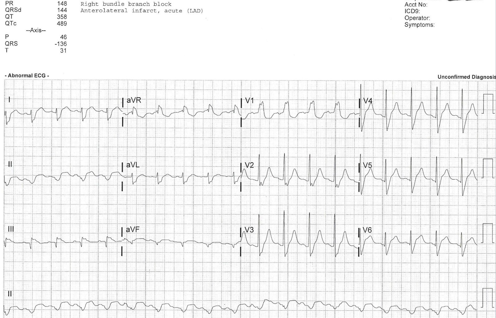
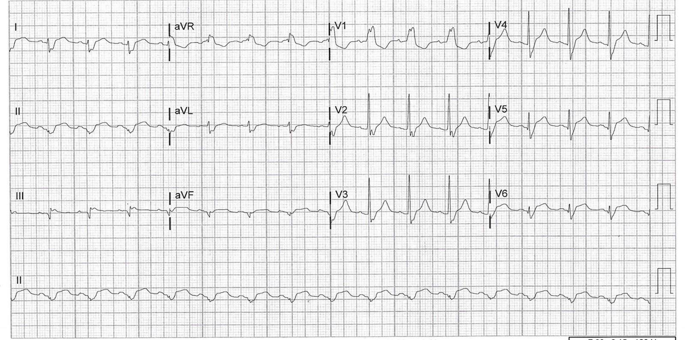
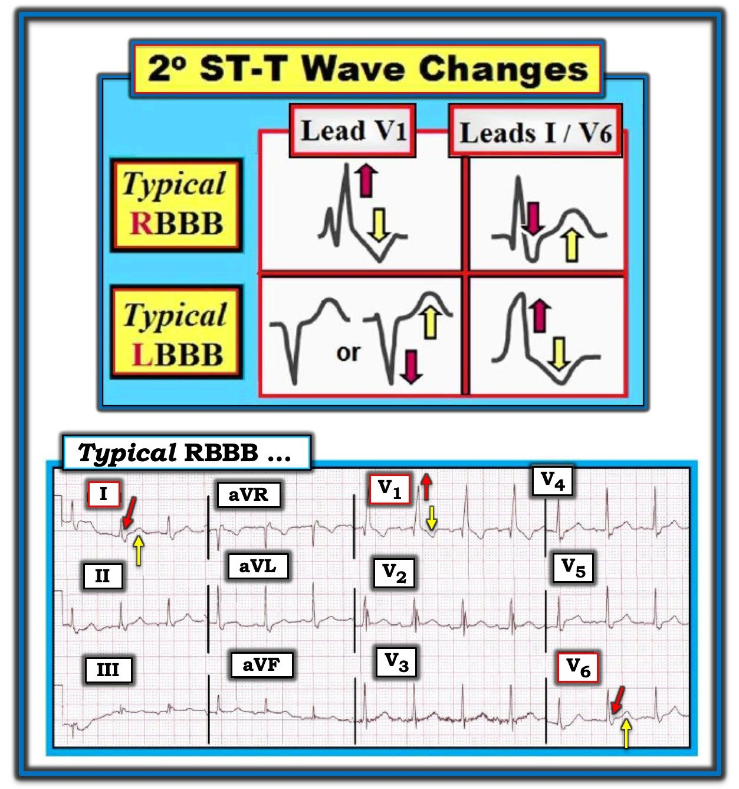
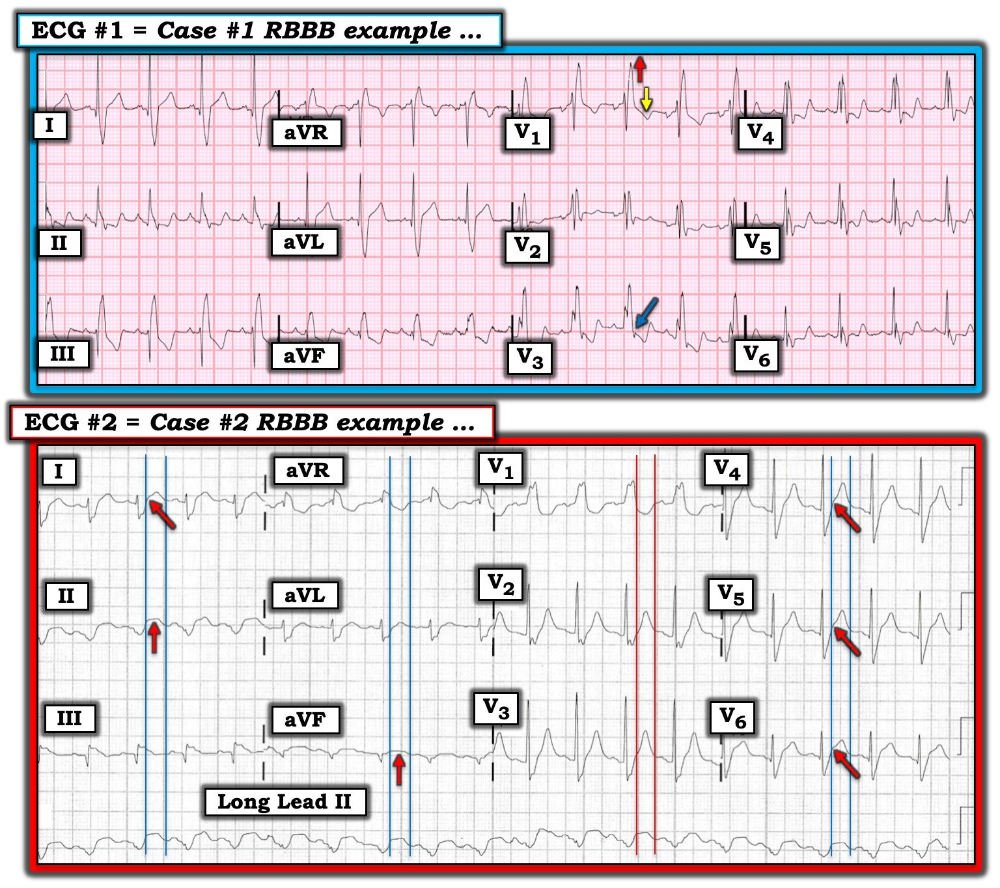
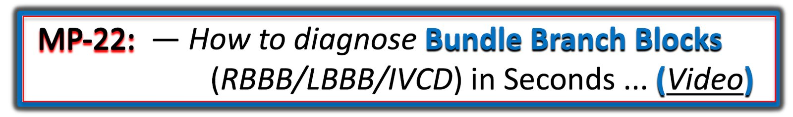

01/07/2019 — Hai bệnh nhân có RBBB
Bản dịch tiếng Việt của bài "Two patients with RBBB" – Dr. Smith’s ECG Blog. Giữ nguyên toàn bộ 10 hình ảnh của bản gốc.
Ca 1.
Một phụ nữ 60 mấy tuổi đến khám vì khó thở. Bà có tiền sử bệnh hô hấp mạn tính và thiếu oxy, nhưng tình trạng thiếu oxy không nặng hơn bình thường.
Điện tâm đồ:

Mặc dù theo quy tắc chung, trong RBBB không nên có ST chênh lên khi không có thiếu máu cục bộ, nhưng đôi khi vẫn có ST chênh lên trông giống như thế này.
Vì vậy, tôi đã đi tìm một điện tâm đồ cũ và nó trông giống hệt.
Bệnh nhân được loại trừ nhồi máu cơ tim cấp với tất cả các lần xét nghiệm troponin đều âm tính.
Siêu âm tim chính thức của bà hoàn toàn bình thường.
Tất cả các điện tâm đồ trước đây đều giống hệt.
Đây là ST chênh lên nền của bà, và tôi đã thấy hiện tượng này rất nhiều lần.
Ca 2: do Dr. James Alva gửi
Một người đàn ông 50 mấy tuổi có đái tháo đường, tăng huyết áp và rối loạn lipid máu đến khoa cấp cứu (ED) vì đau ngực và khó thở từng lúc trong ba ngày qua, kèm theo nôn. Bệnh nhân hơi nhịp nhanh, các dấu hiệu sinh tồn khác bình thường.
Đây là điện tâm đồ ban đầu của bệnh nhân (không có điện tâm đồ cũ):


Tôi đã gửi điện tâm đồ này cho Dr. Smith mà không kèm bối cảnh lâm sàng. Ông nhận xét: “xét theo mọi tiêu chí, đây sẽ là RBBB kèm ST chênh lên (STE) ở thành dưới và thành bên, trông giống STEMI,” nhưng ông cũng lưu ý rằng có một số đặc điểm trông giống các trường hợp dương tính giả (như ca thứ nhất ở trên). Chẳng hạn, ông lưu ý rằng phần lớn những gì trông như STE ở các chuyển đạo dưới trên điện tâm đồ này thực ra chỉ là phần cuối của phức bộ QRS. “Dù vậy, chuyển đạo II thực sự có STE trông giống thiếu máu cục bộ, và aVR có ST chênh xuống (STD) trông giống thiếu máu cục bộ.” Cũng có nhiều STE ở V3-V6, đặc biệt là V4-V6, mà phải được xem là STEMI.
Kết quả troponin đầu tiên (troponin T thế hệ hiện hành (contemporary)) là 2.00 ng/mL.
Bệnh nhân được đưa vào phòng thông tim (cath lab), tại đó nhánh bờ tù thứ hai (OM2) bị tắc 100% đã được tái thông.
Troponin đỉnh là 3.21 ng/mL.
Đây là điện tâm đồ của bệnh nhân ngay sau thông tim:


Những điểm cần học:
Trong một số trường hợp như các ca này, có thể khó phân biệt dấu hiệu điện tâm đồ dương tính thật với dương tính giả khi có RBBB. Theo quy tắc chung, trong phần lớn các trường hợp RBBB bình thường thường không có STE ở bất kỳ chuyển đạo nào. Tuy nhiên, một số trường hợp RBBB nền đôi khi có thể có STE ở các chuyển đạo có sóng S của RBBB đặc biệt lớn và trát đậm (như V5-6, I và aVL). Khi còn nghi ngờ, nên coi các dấu hiệu này là mới cho đến khi chứng minh được điều ngược lại.
Đây là một bài cũ có một số ca liên quan tương tự:
PseudoSTEMI and True ST elevation in Right Bundle Branch Block (RBBB) (Giả STEMI và ST chênh lên thật sự trong blốc nhánh phải (RBBB)). Đừng bỏ lỡ ca 4 ở cuối bài.

===================================
BÌNH LUẬN CỦA TÔI, bởi KEN GRAUER, MD (1/7/2019):
===================================
Chẩn đoán BBB (Bundle Branch Block – blốc nhánh) trên điện tâm đồ từ lâu đã là một nguồn gây nhầm lẫn tiềm tàng đối với nhiều người đọc. Thách thức càng tăng lên khi cố gắng đánh giá thiếu máu cục bộ cấp trên các bản ghi có BBB. Bài blog này nêu bật một số điểm then chốt (pearl) và cạm bẫy trong việc đánh giá RBBB ở những bệnh nhân đến khoa cấp cứu.
- Chẩn đoán BBB trên điện tâm đồ có thể được đơn giản hóa. Phương pháp tôi ưa dùng cho phép chẩn đoán chính xác loại BBB trong chưa đến 5 giây. NẾU bạn quan tâm đến cách tiếp cận thân thiện–với người dùng của tôi đối với Chẩn đoán BBB trên điện tâm đồ— Hãy xem ECG Video của tôi ở cuối trang này.
- 2 lý do giúp bạn có thể chẩn đoán loại BBB nhanh như vậy là: i) Một khi chúng ta đã loại trừ VT và dẫn truyền WPW là nguyên nhân gây QRS rộng — thì trên thực tế, chúng ta chỉ cần quan tâm đến 3 Loại Rối loạn Dẫn truyền Trên thất (= RBBB — LBBB — IVCD); và, ii) Để phân biệt 3 loại rối loạn dẫn truyền này, chúng ta chỉ cần nhìn vào 3 trong số 12 chuyển đạo ( = chuyển đạo I — chuyển đạo V1 — chuyển đạo V6). Tôi xin nhấn mạnh rằng tôi luôn xem tất cả 12 chuyển đạo — nhưng việc phân biệt chính xác giữa RBBB, LBBB hay IVCD đạt được dễ dàng nhất và tiết kiệm thời gian nhất bằng cách đơn giản là tập trung vào 3 chuyển đạo = chuyển đạo V1 bên phải — và — các chuyển đạo I và V6 bên trái.
Chi tiết cách tiếp cận của tôi đối với chẩn đoán BBB trên điện tâm đồ nằm ngoài phạm vi của bài blog này — nhưng được thảo luận trong ECG Video dưới đây (hoặc tải miễn phí PDF Phần 5 về BBB — từ ECG-2014-ePub của tôi).

Hãy quay lại chủ đề hôm nay = Đánh giá 2 điện tâm đồ có RBBB. Nhưng trước tiên — Hãy xem xét 2 phần của Hình 1:


Xem Hình 1:
- PHẦN DƯỚI — Điện tâm đồ 12 chuyển đạo này cho thấy một nhịp trên thất với QRS rộng (có lẽ là nhịp nhĩ thấp — do sóng P âm ở chuyển đạo II, nhưng sóng P dương ở chuyển đạo I và aVL). Xem 3 chuyển đạo MẤU CHỐT (I-V1-V6) — sự hiện diện của phức bộ rSR’ điển hình ở chuyển đạo V1 — với QRS dương có sóng S tận rộng ở cả chuyển đạo I và V6 — xác định hình thái QRS của bản ghi trong Hình 1 là hình ảnh RBBB điển hình.
- PHẦN TRÊN của Hình 1 — RBBB điển hình và LBBB điển hình đều làm thay đổi trình tự khử cực thất theo cách có thể dự đoán được. Là kết quả trực tiếp của trình tự hoạt hóa thất bị thay đổi này — các rối loạn dẫn truyền này cũng làm thay đổi trình tự tái cực thất, dẫn đến sự xuất hiện các thay đổi ST-T thứ phát (2º) dự kiến — được thể hiện ở PHẦN TRÊN của Hình 1.
- Các thay đổi ST-T thể hiện ở PHẦN TRÊN của Hình 1 được gọi là “thứ phát” — vì chúng là kết quả trực tiếp của (tức là, chúng thứ phát sau) chính rối loạn dẫn truyền. Nghĩa là, chúng ta dự kiến sẽ thấy kiểu đáp ứng ST-T này như một phần bình thường của RBBB hoặc LBBB. Kiểu hình dự kiến này đối với RBBB điển hình hoặc LBBB điển hình là “ST đối hướng” (ST Opposition). Nghĩa là — đoạn ST và sóng T phải hướng ngược với sóng lệch QRS cuối cùng (các mũi tên ĐỎ và VÀNG ở PHẦN TRÊN của Hình 1) ở mỗi chuyển đạo trong 3 chuyển đạo MẤU CHỐT (I,V1,V6). Sai lệch khỏi kiểu hình này là bất thường — và cho thấy một thay đổi (1º) ST-T nguyên phát (điều này phải gợi ý khả năng thiếu máu cục bộ hoặc nhồi máu).
- ĐIỂM THEN CHỐT (PEARL): Cái hay của quy tắc ST đối hướng — là nó cho phép bạn tập trung việc đánh giá hình thái ST-T khi có BBB vào 3 chuyển đạo MẤU CHỐT. Rõ ràng, tiếp theo chúng ta sẽ cần xem các chuyển đạo lân cận để đánh giá các thay đổi ST-T — nhưng việc tập trung chú ý vào hình dạng ST-T ở các chuyển đạo I, V1 và V6 thường mang lại hiểu biết then chốt chỉ trong vài giây về sự hiện diện của thiếu máu cục bộ ở bệnh nhân có RBBB hoặc LBBB điển hình.
- LƯU Ý #1: Quy tắc “ST đối hướng” áp dụng được cho RBBB và LBBB — nhưng không áp dụng cho IVCD (đó là lý do vì sao thường khó đánh giá các thay đổi cấp tính hơn khi có IVCD).
- LƯU Ý #2: Theo kinh nghiệm của tôi — quy tắc “ST đối hướng” đáng tin cậy đối với RBBB và LBBB ở 3 chuyển đạo MẤU CHỐT (I,V1,V6) — nhưng không nhất thiết đúng ở các chuyển đạo khác. Dù vậy — bạn sẽ ngạc nhiên khi thấy quy tắc đơn giản này thường xuyên mang lại hiểu biết hữu ích chỉ trong vài giây đến mức nào!
- LƯU Ý #3: Ngoài “ST đối hướng” — sự hiện diện của ST chênh lên nguyên phát ở các chuyển đạo lẽ ra không có ST chênh lên thường là chỉ dấu tốt nhất của STEMI cấp ở bệnh nhân có BBB.
PHẦN DƯỚI của Hình 1 — Như đã nêu, có nhịp nhĩ thấp kèm RBBB điển hình (rSR’ ở V1; sóng S tận rộng ở I & V6).
- Tập trung vào sóng ST-T ở các chuyển đạo I, V1 và V6. Sóng T dương ở các chuyển đạo bên trái I và V6 (các mũi tên VÀNG ở các chuyển đạo này) là một đáp ứng dự kiến ( = thay đổi ST-T thứ phát bình thường) — vì nó ngược hướng với sóng lệch QRS cuối cùng ở các chuyển đạo này (là sóng S tận rộng = các mũi tên ĐỎ ở I và V6).
- Ở chuyển đạo bên phải V1 — sóng ST-T âm ở V1 (mũi tên VÀNG ở chuyển đạo này) là một đáp ứng dự kiến với RBBB — vì nó ngược hướng với sóng lệch QRS cuối cùng ở chuyển đạo V1 (là sóng lệch R’ dương = mũi tên ĐỎ ở V1).
Về 2 điện tâm đồ trong bài blog hôm nay (Hình 2):


SUY NGHĨ CỦA TÔI về ĐIỆN TÂM ĐỒ #1 — Bệnh nhân trong Ca #1 là một phụ nữ 60 mấy tuổi bị khó thở cấp, nhưng không đau ngực.
- Nhịp là nhịp nhanh xoang tần số ~105/phút.
- Khoảng PR bình thường — nhưng QRS rộng. Hình thái QRS phù hợp với RBBB vì: i) có hình ảnh rSR’ (với “tai thỏ” bên phải cao hơn) ở chuyển đạo V1; và, ii) có sóng S tận rộng ở cả chuyển đạo I và V6.
- LƯU Ý: Có phân mảnh QRS rõ rệt trên bản ghi này, vượt quá hình ảnh rSR’ ba pha đơn thuần ở các chuyển đạo V1 và V2. Cụ thể — lưu ý rằng khía QRS sâu tiếp tục xuất hiện ở các chuyển đạo V3-đến-V6. Và, thay vì sóng S là sóng lệch âm một pha rất điển hình mà chúng ta có thấy ở chuyển đạo I — QRS ở chuyển đạo V6 biểu hiện hình ảnh RSR’S’ nhiều pha. Mức độ phân mảnh mà chúng ta thấy ở rất nhiều chuyển đạo trên điện tâm đồ #1 gợi ý sẹo do một khiếm khuyết cấu trúc nền nào đó — dù là do nhồi máu cũ hay bệnh cơ tim.
- Sóng ST-T ở chuyển đạo V1 của điện tâm đồ #1 hoàn toàn phù hợp = ngược hướng với sóng lệch QRS cuối cùng ở chuyển đạo này, là sóng R’ dương (các mũi tên ĐỎ và VÀNG ngược hướng nhau trên điện tâm đồ #1).
- Sóng T ở chuyển đạo I dương một cách phù hợp — nhưng như Dr. Smith đã nhấn mạnh, có ST chênh lên tại điểm J ở cả chuyển đạo I và aVL — điều này không phải lúc nào cũng bình thường.
- Sóng ST-T ở chuyển đạo V6 của điện tâm đồ #1 chắc chắn không bình thường! Đoạn ST ở chuyển đạo V6 này thẳng (dạng bậc thềm) — nếu không muốn nói là dạng vòm. Theo sau nó là một sóng T có vẻ hai pha (sóng lệch âm ban đầu nhỏ, tiếp theo là sóng lệch dương lớn hơn). Chuyển đạo lân cận V5 — và bên cạnh nó, chuyển đạo V4 — ủng hộ nhận định rằng sóng ST-T ở các chuyển đạo ngực bên này không bình thường (đoạn ST ở các chuyển đạo này dạng vòm, nếu không muốn nói là hơi chênh xuống — và sóng T trông có vẻ hai pha). Cuối cùng — mũi tên XANH ở chuyển đạo V3 làm nổi bật điểm J chênh xuống dẫn vào một sóng ST-T võng xuống. Với RBBB “điển hình” — ST-T chênh xuống phải lớn nhất ở chuyển đạo V1 — và không phải ở chuyển đạo V3, như trên điện tâm đồ #1.
- Cũng có điểm J chênh xuống ở mỗi chuyển đạo trong 3 chuyển đạo dưới trên điện tâm đồ #1 — với đoạn ST thẳng đuỗn, gần như dạng bậc thềm ở chuyển đạo II. Trong bối cảnh các sóng ST-T bất thường ở các chuyển đạo V3-đến-V6 — tình trạng điểm J ST chênh xuống ở các chuyển đạo dưới này + điểm J ST chênh lên ở các chuyển đạo bên cao (ở I, aVL) nên làm dấy lên mối lo ngại như đã xảy ra trong ca này!
- ĐIỀU CỐT LÕI: Theo Dr. Smith — bệnh nhân trong Ca #1 được loại trừ nhồi máu cơ tim cấp với tất cả các lần troponin đều âm tính. Siêu âm tim chính thức hoàn toàn bình thường — và điện tâm đồ #1 không thay đổi so với tất cả các bản ghi trước đó trong hồ sơ của bà. Dù vậy — những “Điều cần nhớ” chính từ Ca #1 là: i) có nhịp nhanh xoang kèm RBBB hoàn toàn; ii) có phân mảnh QRS rõ rệt vượt quá mức dự kiến đối với RBBB đơn thuần (điều này phải gợi ý khả năng cao có bệnh tim nền); và, iii) ngoài điểm J ST chênh lên ở các chuyển đạo bên cao I và aVL — còn có ST-T chênh xuống bất thường ở không dưới 7 trong 12 chuyển đạo. Những dấu hiệu này trên điện tâm đồ ban đầu rõ ràng gợi ý thiếu máu cục bộ có thể là cấp tính. Cần đánh giá thêm cho đến khi có thể loại trừ một biến cố cấp.
SUY NGHĨ CỦA TÔI về ĐIỆN TÂM ĐỒ #2 — Bệnh nhân trong Ca #2 là một người đàn ông 50 mấy tuổi bị khó thở và đau ngực trong 3 ngày trước đó.
- Nhịp là nhịp nhanh xoang tần số ~115/phút.
- Khoảng PR bình thường — nhưng QRS rộng. Hình thái QRS phù hợp với RBBB vì: i) có hình ảnh tương đương RBBB (sóng R một pha, có khía) ở chuyển đạo V1; và, ii) có sóng S tận rộng ở cả chuyển đạo I và V6.
Việc đánh giá các thay đổi ST-T trên điện tâm đồ #2 là một thách thức ở một số phần của bản ghi này vì khó xác định phức bộ QRS kết thúc ở đâu . Để thuận tiện cho việc này — tôi đã chọn chuyển đạo V1 là một chuyển đạo mà tôi có thể xác định rõ điểm kết thúc của phức bộ QRS và điểm kết thúc của sóng T (các đường dọc song song màu ĐỎ trên điện tâm đồ #2).
- Tôi đã thêm các đường dọc song song màu XANH để xác định điểm kết thúc của QRS và điểm kết thúc của sóng T ở các nhóm chuyển đạo ghi đồng thời khác trên điện tâm đồ #2. Điều này giúp xác định đoạn ST dễ dàng hơn — đoạn này nằm giữa mỗi cặp đường dọc.
- Các mũi tên ĐỎ ở các chuyển đạo I, V4, V5 và V6 cho thấy rõ điểm J ST chênh lên ở mỗi chuyển đạo trong số các chuyển đạo bên này. Không có điểm J ST chênh lên như vậy ở chuyển đạo aVL.
- Sử dụng cặp đường dọc màu XANH để xác định đoạn ST ở các chuyển đạo dưới — chúng ta thấy rõ một mức ST chênh lên dạng vòm nhỏ-nhưng-chắc chắn ở các chuyển đạo II và aVF (các mũi tên ĐỎ ở các chuyển đạo này). Xét đến việc phức bộ QRS ở các chuyển đạo này nhỏ như thế nào — ST chênh lên ở các chuyển đạo dưới này có ý nghĩa. Ngược lại, đoạn ST nằm giữa các đường dọc màu XANH ở chuyển đạo III mơ hồ hơn nhiều.
- Có sóng Q lớn ở mỗi chuyển đạo dưới.
- Tôi không thấy ST chênh xuống soi gương trên điện tâm đồ #2.
- ĐIỀU CỐT LÕI: Điện tâm đồ trong Ca #2 cho thấy nhịp nhanh xoang, RBBB — và sóng S đi xuống rất dốc ở chuyển đạo I, có thể chỉ ra LPHB. Ở bệnh nhân này với đau ngực kéo dài liên tục nhiều ngày — sóng Q ở các chuyển đạo dưới + ST chênh lên ở các chuyển đạo dưới-bên là chẩn đoán STEMI cấp cho đến khi chứng minh được điều ngược lại.
=======================================


ECG Media Pearl #22 (13:15 phút Video) — Ôn lại cách tiếp cận thân thiện–với người dùng cho phép chẩn đoán các blốc nhánh (Bundle Branch Blocks) trong chưa đến 5 giây.